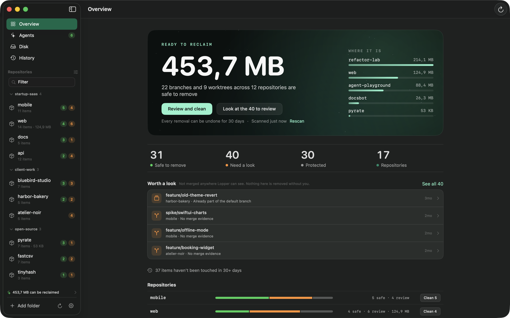

keep your repositories light.
A Mac app that removes the branches and folders you no longer need, and shows why each is safe.
lopper.zawalid.com
A Mac app that removes the branches and folders you no longer need, and shows why each is safe.
